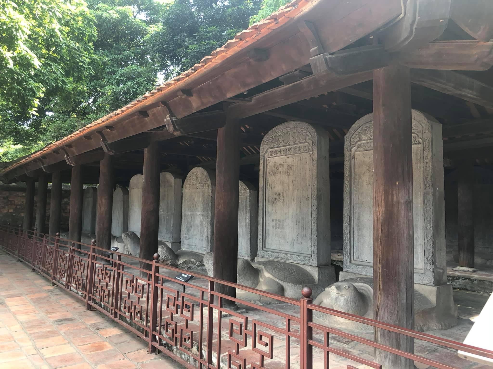
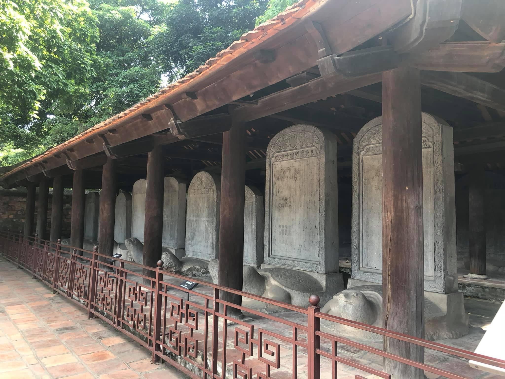

ベトナムは多くの種類の信念と宗教を持つ国です。 ベトナムは東南アジアに位置し、3つの側面が海に面しているため、世界中の国々との交流に非常に便利であり、世界の文化の流れ、宗教、宗教に非常に浸透しやすい場所でもあります。 信念や宗教の多様性により、人々はしばしばベトナムを世界の宗教博物館と比較しています。 文化の面では、信念や宗教の多様性がベトナムの文化を豊かでユニークなものにすることに貢献しています。
ベトナムには、キリスト教、仏教、ヒンドゥー教など、さまざまな宗教が存在します。そのため、ここで文化を探索すると、無数の作品が見つかります。宗教は同じではなく、その多くが何千人もの観光客を魅了する観光名所になっています。毎年訪れて探索してください。たとえば、一柱寺（ハノイ）、文廟（ハノイ）、ノートルダム大聖堂（ホーチミン市）、マリアマンヒンドゥー寺院。
また、祖先を崇拝する習慣もベトナム文化を語る上で欠かすことのできない美しさのひとつです。 崇拝は、水を飲む行為を表現し、水源を思い出し、生まれ育ったことのメリットを思い出すようなものです。 彼が前に行った父親のうち。 したがって、ほとんどすべてのベトナムの家族は、家族の祖先を崇拝するために少なくとも1つの祭壇を持っています。 ベトナムの人々は、主要な記念日に加えて、テトの休日、月の初日と満月の日、清明タオ氏、タンミンなどの他の特別な日を記念してお香を燃やすことがよくあります。 祖先崇拝は古くから確立されてきた文化活動であり、これまでのところ、この活動は故人への敬意を表すために受け継がれています。
 
